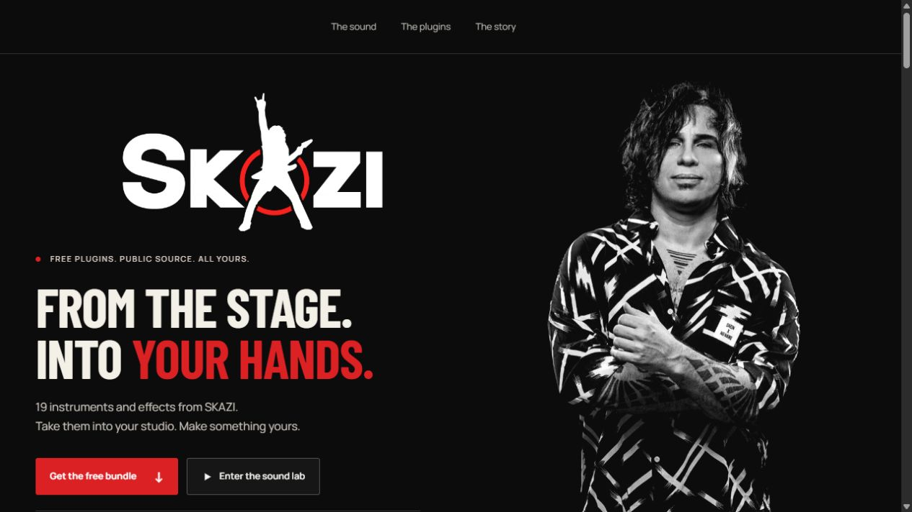
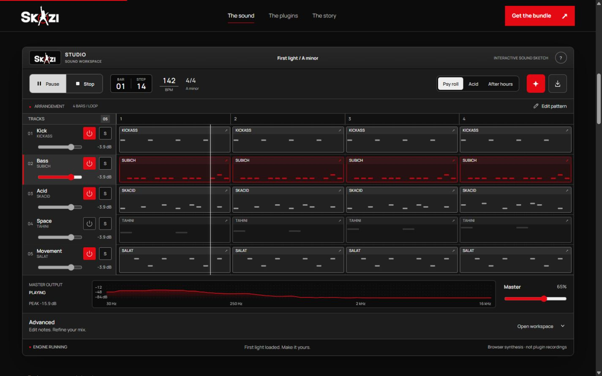
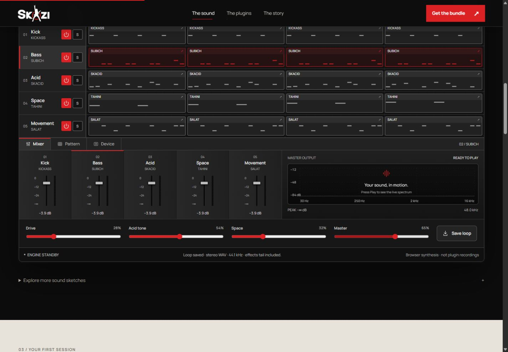
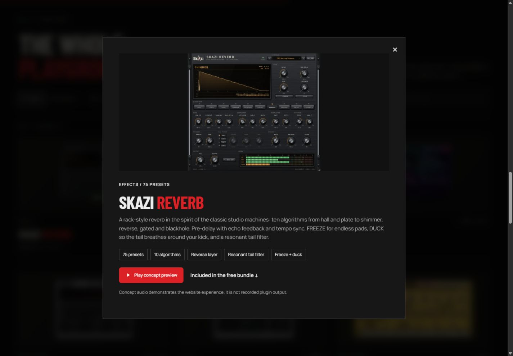
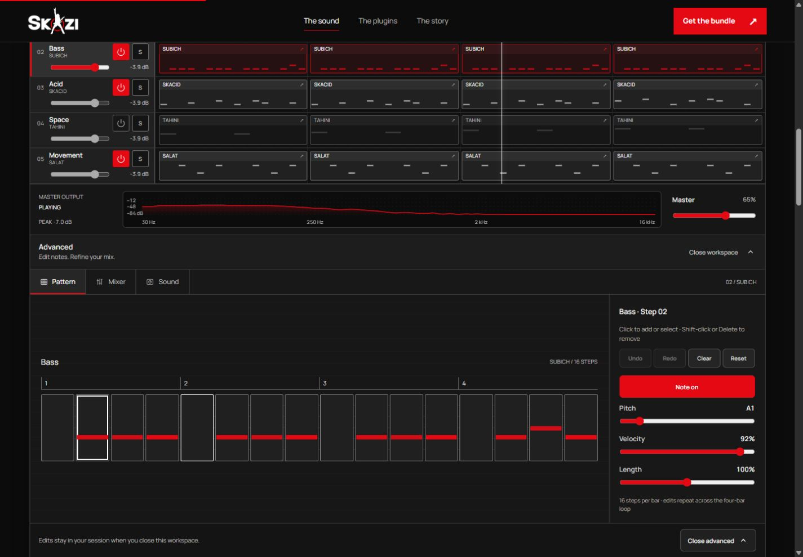
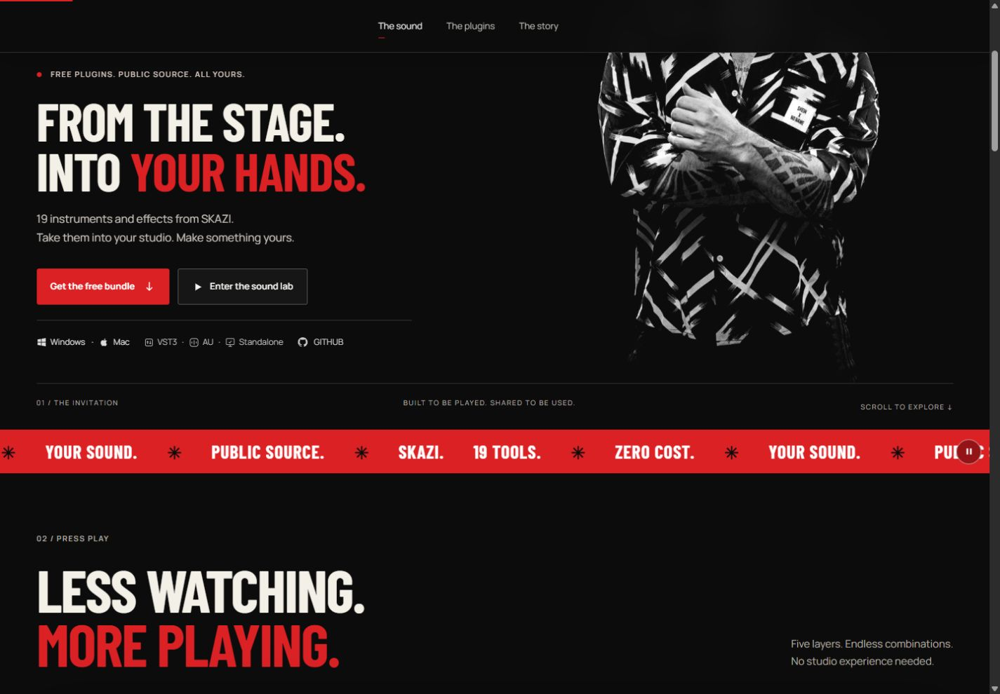
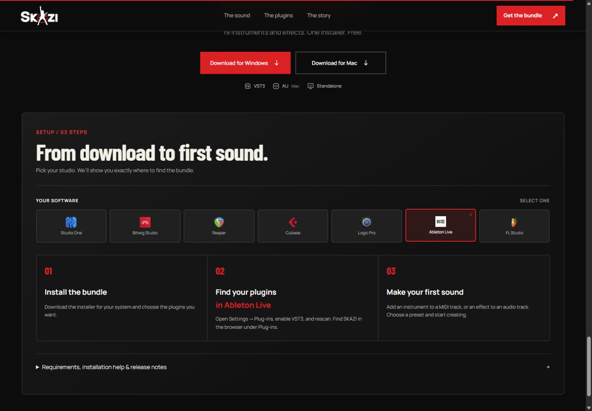
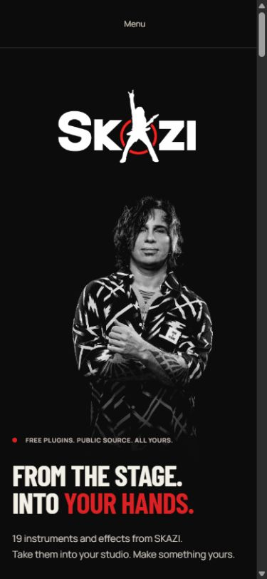

אשר, זה האתר החדש של SKAZI
בניתי לך מחדש את עמוד ההורדה. הכל ב-PR אחד, אתה רק צריך להסתכל ולהחליט.
לפתוח את האתר החדש ולהתרשם ›זו גרסת תצוגה מקדימה, זהה לחלוטין למה שייכנס לאתר שלך. כדאי לפתוח גם מהטלפון.
מה השתנה
- זה העיצוב החדש בעמוד הראשי. שחור, לבן ואדום, תמונות שנחשפות בצבע לפי הסמן, פתיחת לוגו קצרה ותנועה שאפשר לעצור. ממשק האולפן יציב, בלי טשטוש זכוכית או קפיצות צבע בריחוף. הפס האדום על תמונת הפתיחה הוסר.
- סטודיו שאפשר לנגן בו. חמישה ערוצים עם קיק, בס מתגלגל, אסיד, מרחב וכלי הקשה; שלושה פריסטים מקוריים, עריכת צעדים עם גובה צליל, עוצמה ואורך לכל תו, Accent ו-Slide באסיד, Undo ו-Redo, מיקסר, Solo ו-Mute. האדום במסילות ובקליפים מסמן רק את הערוץ שבחרת; כפתור ההפעלה האדום מסמן שערוץ נשמע.
- אולפן קומפקטי עם עומק לפי הצורך. העוצמה נמצאת בכל שורת ערוץ וה-Master נשאר גלוי. Advanced פותח את Pattern, Mixer ו-Sound; לחיצה על קליפ פותחת את העריכה שלו. סגירת האזור שומרת על הנגינה והעריכות.
- זהות של מוצר מבית SKAZI. תג לוגו בהשראת הפלאגינים, עם מעבר אור עדין בזמן נגינה. Play, Pause ו-Stop חולקים אזור קבוע, שנפתח לשני חצאים במעבר חלק.
- פרטים מוזיקליים. תנועה לאורך ארבע תיבות, הדגשות וגלישות באסיד, דיליי מסונכרן לקצב, ושליטה בדרייב, בגוון ובמרחב. החלפת פריסט, קצב ובניית דרופ נכנסים בתחילת תיבה.
- אפשר לקחת את הסקיצה. Save loop שומר ארבע תיבות עם זנב אפקטים כקובץ WAV סטריאופוני. Pause ממשיך מאותה נקודה; Stop חוזר להתחלה.
- כל 19 הפלאגינים. חיפוש באנגלית וסינון לפי סוג וצליל. התמונות נשארות בתוך המסגרת; אייקון ההגדלה מופיע בריחוף או בפוקוס מקלדת ופותח פרטים.
- מהורדה לצליל ראשון. כפתורי Windows ו-Mac ישירים למתקינים הרשמיים, הודעת ההתקנה של Windows והדרכה לשבע תוכנות אולפן, בלי תפריט נפתח.
- עמוד אישי וקישורים. YouTube, Spotify, TikTok, Instagram ו-Threads, עם שורת הקרדיט שבחרנו.
המוזיקה באתר היא סקיצה מקורית שנוצרת בדפדפן. היא אינה הקלטה של הפלאגינים ואינה קטע מסחרי של SKAZI.








להורדת דוגמת WAV שנוצרה בסטודיו החדש · תיעוד הבדיקות והמגבלות · תוכנית האבולוציה לאולפן
אהבת? ככה מכניסים את זה לאתר שלך (3 לחיצות)
- פותחים את ה-PR: github.com/slazoasher/skazi-bundle/pull/8 (צריך להיות מחובר ל-GitHub עם החשבון שלך, slazoasher).
- גוללים למטה עד הכפתור הירוק Merge pull request ולוחצים עליו.
- לוחצים על הכפתור הירוק השני, Confirm merge.
זהו. תוך כמה דקות האתר slazoasher.github.io/skazi-bundle יתעדכן לבד. אם אתה עדיין רואה את הישן, רענן עם Ctrl+F5 (או Cmd+Shift+R במק).
שום דבר בפלאגינים עצמם, במתקינים או בהורדות לא משתנה. רק עמוד האתר.
רוצה לשנות משהו קודם?
תכתוב לי מה, או תשאיר הערה ב-PR (יש שם תיבת תגובה בתחתית העמוד). אני אעדכן, וה-PR יתעדכן לבד. לא צריך לעשות כלום בינתיים.
לא אהבת?
לא קורה כלום. האתר שלך נשאר כמו שהוא. אפשר פשוט להתעלם מה-PR או ללחוץ על Close pull request בתחתית העמוד שלו.
באהבה, סרגיי